Attack of the Timelout · visual verification
Actual bundled-game browser screenshots. Developer showcases are marked; gameplay correctness is checked separately.
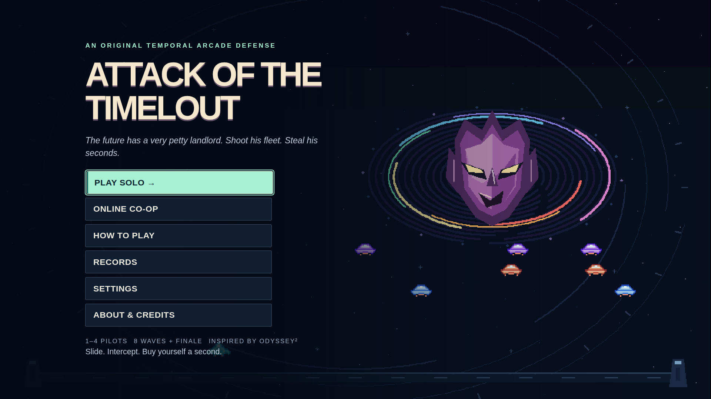
Title · television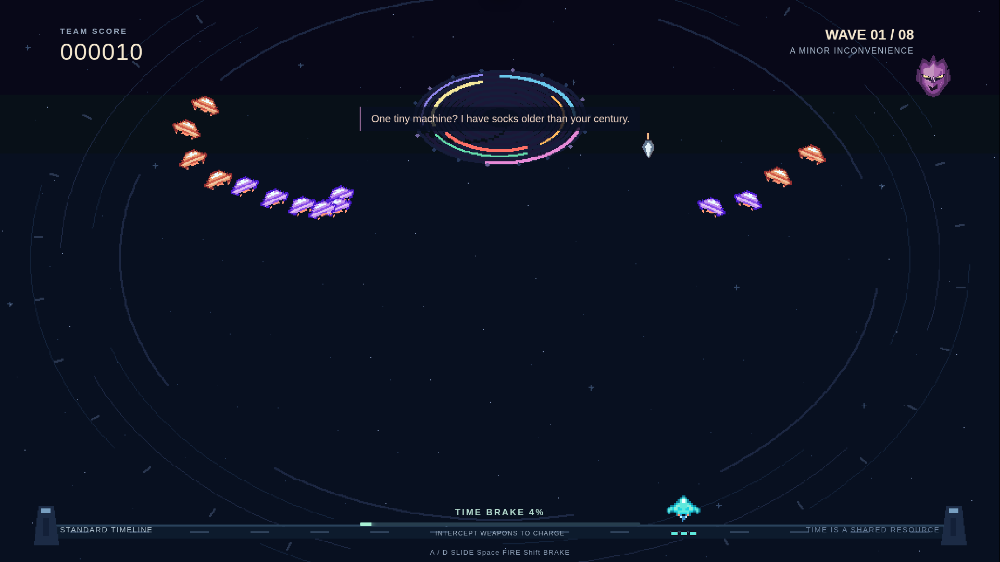
Early combat · keyboard / pad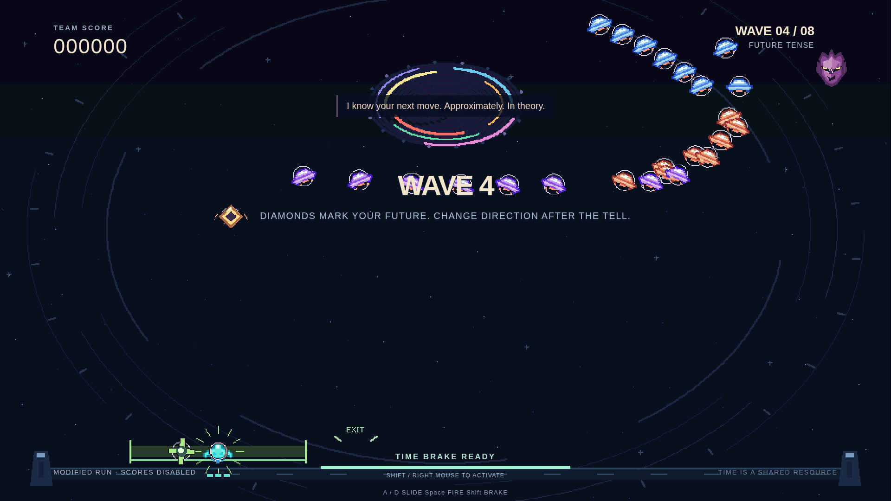
Grounded roller · bounded escape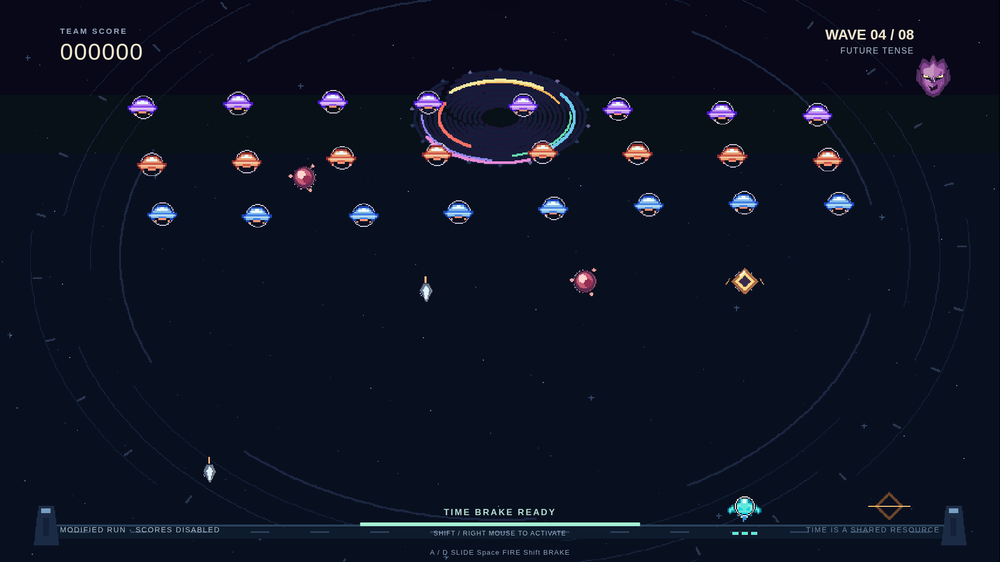
Combined arsenal · safe attack windows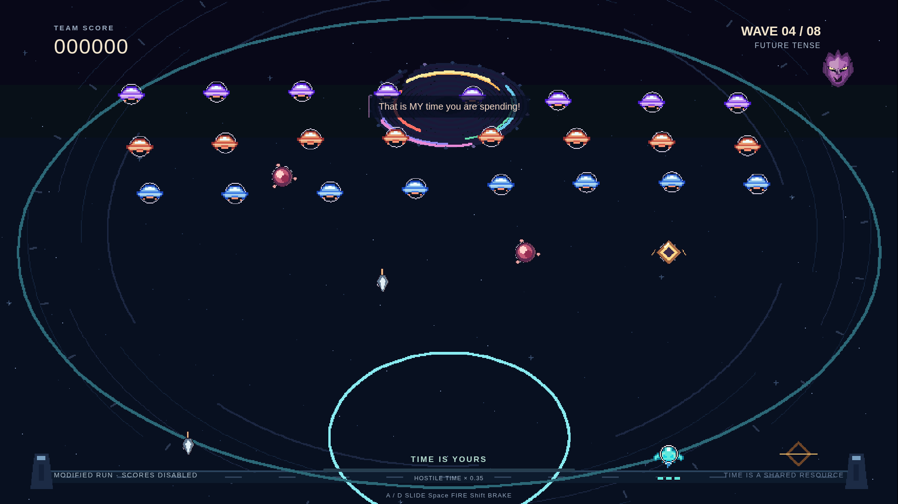
Time brake · hostile slowdown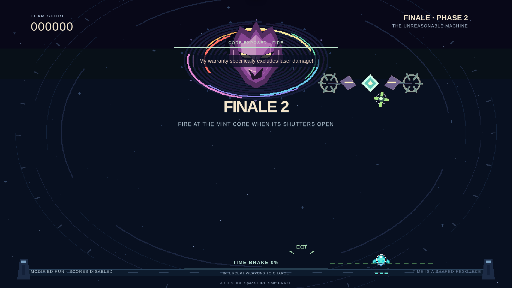
Finale · exposed core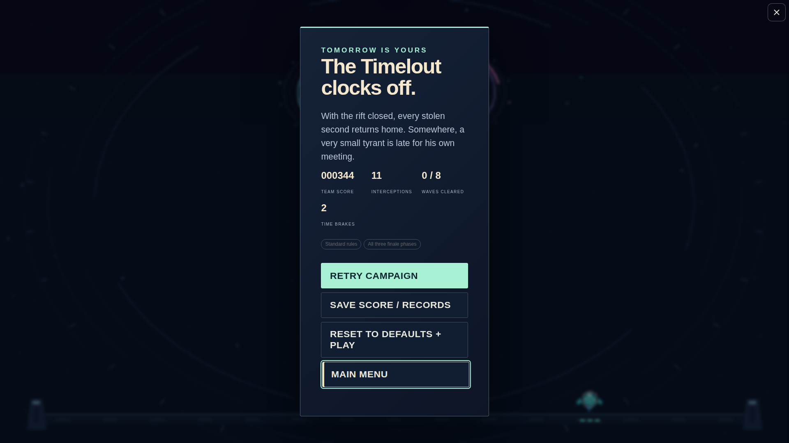
Victory results · dev showcase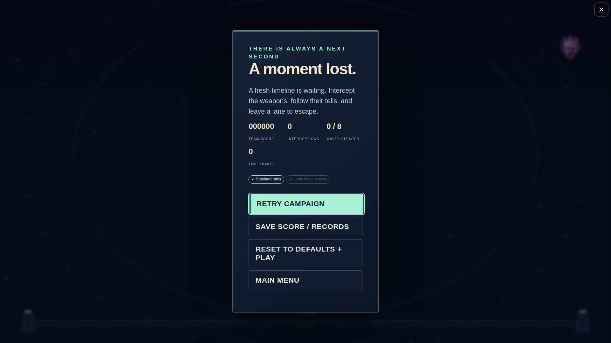
Ordinary failure · three integrity hits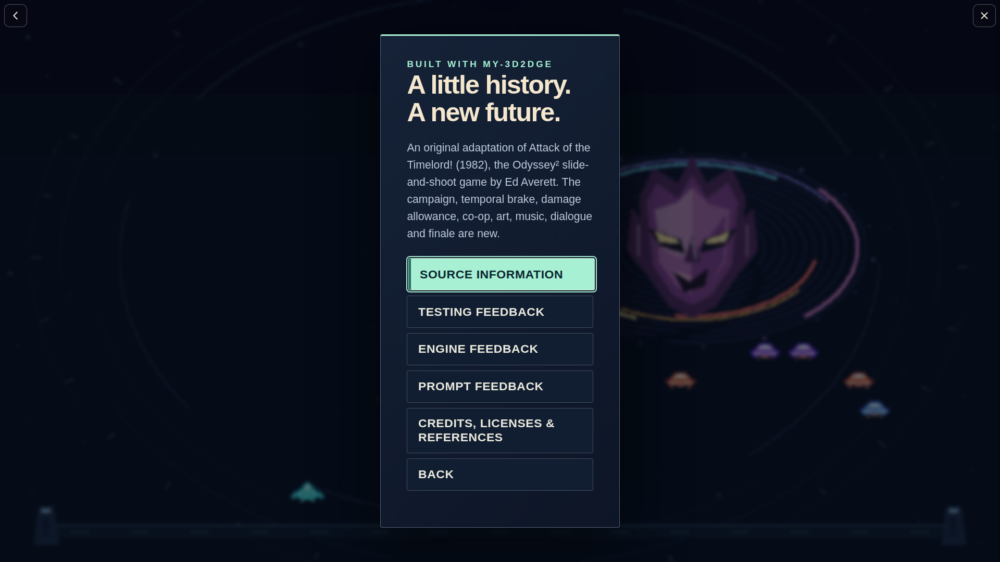
About · source and feedback access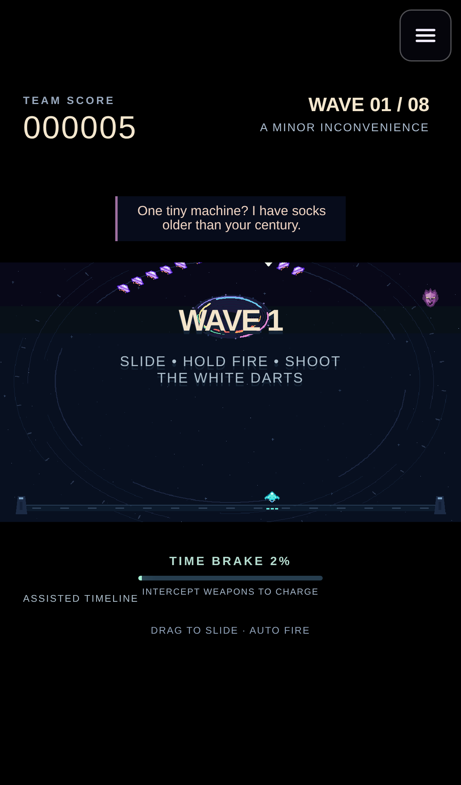
Touch · portrait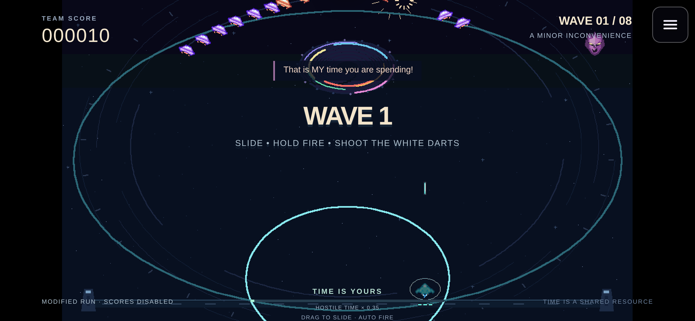
Touch · landscape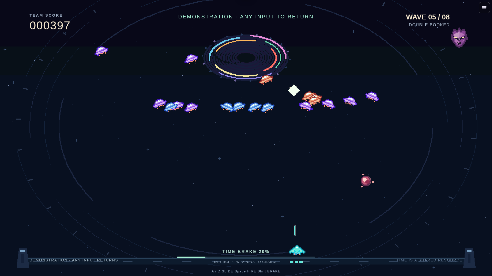
Attract · private simulation